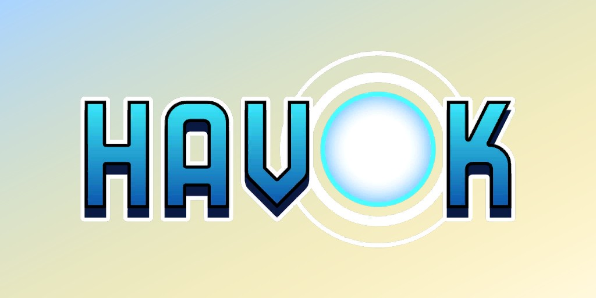
Havok (Alexander Summers) (Terre-616)
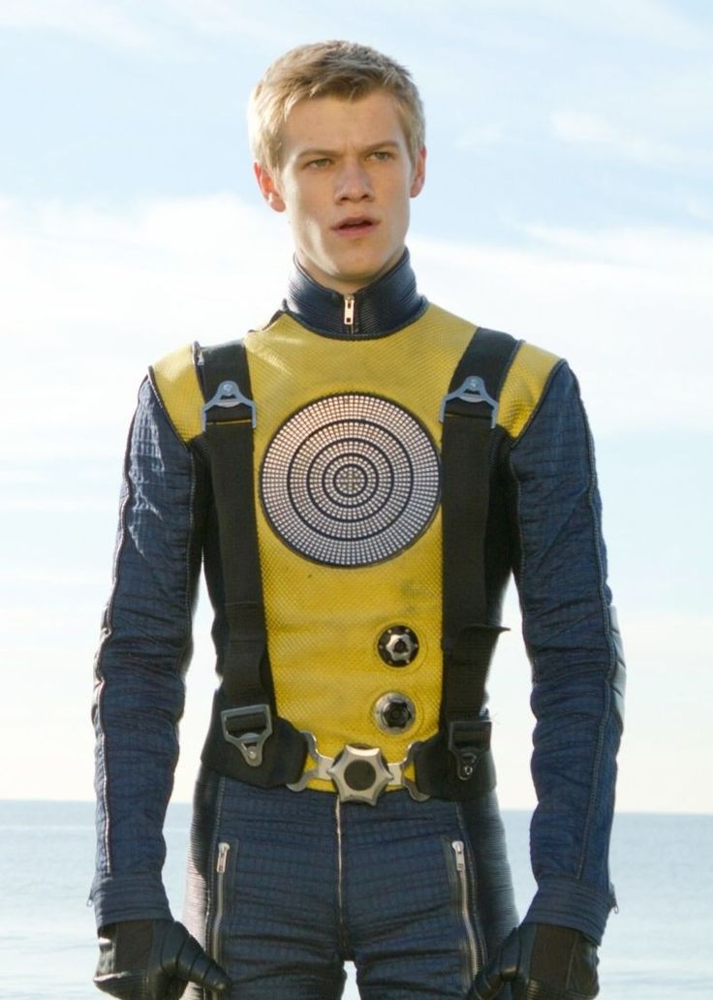
Origines :
Alexander Summers est le fils du major Christopher Summers, pilote d'essai de l'US Air Force, et de son épouse Katherine Ann Summers.
Il a deux frères : l'aîné, Scott Summers, et le cadet, Gabriel Summers, plus connus sous les noms de Cyclope et de Vulcain.
Tous les trois sont des mutants.
Alors que Scott et Alex, encore enfants, rentraient de vacances en famille à bord du vieux jet privé de leur père, un vaisseau éclaireur de l’empire Shi'ar apparut soudainement et mit le feu à l'appareil.
Katherine les poussa hors de l'avion avec le seul parachute disponible, mais celui-ci prit feu et Scott utilisa pour la première fois ses rayons optiques, afin de ralentir leur descente.
Scott et Alex ignoraient que leurs parents avaient été téléportés hors de l'avion par les Shi'ar juste avant l'explosion de l'appareil.
Les deux frères ont été hospitalisés et ont tout deux souffert d'amnésie traumatique concernant l'incident.
Après deux semaines à l'hôpital, ils furent placés au State Home for Foundlings, un orphelinat d'Omaha, dans le Nebraska, où ils subirent une série de tests et d'expériences menés par le propriétaire de l'établissement, M. Millbury, pseudonyme du généticien maléfique Mister Sinistre.
Ce dernier pensait que Scott était le frère Summers avec le plus de potentiel, et fit adopter Alex afin de les séparer et rendre Scott émotionnellement vulnérable.
Alex n'eut que peu de contact avec Scott pendant des années, et fut élevé par le couple Blanding, dont le fils Todd avait péri dans un accident de voiture.
Alex subit des pressions pour remplacer Todd, ce qu'il s'efforça de faire du mieux qu'il put.
Lorsque Vincent, le meurtrier de Todd, kidnappa Alex et sa sœur adoptive Haley, Alex manifesta pour la première fois ses pouvoirs mutants, incinérant Vincent.
Mister Sinistre apparut, surpris de constater que le potentiel d'Alex dépassait peut-être celui de Scott.
Malheureusement, Alex ne maîtrisait pas ses pouvoirs.
Sinister plaça des barrières psi sur Alex et Haley, leur faisant oublier tout ce qu'il s’était passé cette nuit-là.
Un jour, le mutant immortel Apocalypse rencontra Ahmet Abdol, un mutant non-mutant, et le considéra comme un homme brisé, vaincu, doté d'un immense potentiel mais sans but.
Apocalypse se procura un échantillon d'ADN d'Alex, s'assurant que son code génétique serait modifié à ses fins, et le fit greffer à Abdol par Sinister.
L'expérience ne fut que partiellement concluante et donna naissance à une relation symbiotique inattendue et pour le moins singulière : le pouvoir d'Abdol fut divisé entre eux au lieu d'être partagé.
Décidant d'utiliser ses pouvoirs à des fins personnelles, Abdol créa un culte autour de sa personne, se proclamant messie : le Culte du Pharaon Vivant.
Alex grandit sans se douter du pouvoir mutant naissant de son frère, ni de son identité de Cyclope, chef des X-Men, jusqu'à ce qu'il obtienne son diplôme d'études géophysiques à l'Old Landon College.
Ahmet Abdol, alors professeur d'archéologie, découvrit le lien psychique entre lui et Alex.
Bien que tous deux possédaient le pouvoir latent d'absorber et de transformer le rayonnement cosmique, la capacité d'Abdol à l'exercer était bloquée par le corps d'Alex.
Il le captura et l'emmena dans son laboratoire, en Égypte.
Abdol trouva un moyen de protéger le corps de Summers des radiations cosmiques ambiantes, permettant ainsi à son propre corps d'atteindre son plein potentiel latent.
Abdol se transforma en Monolithe Vivant, un mutant gigantesque doté d'une immense puissance cosmique.
Le Monolithe fut ensuite vaincu lors d'un combat contre les X-Men, lorsque les pouvoirs latents d'Alex se manifestèrent sous le stress de son emprisonnement dans le mécanisme conçu pour le protéger des radiations.
Incapable de contrôler les ondes de choc émises par son corps, Summers choisit de rester dans le désert égyptien plutôt que d'accompagner les X-Men en Amérique.
Il fut rapidement capturé par une Sentinelle et emmené au quartier général de Larry Trask, le fils de Bolivar Trask, inventeur des Sentinelles.
Trask lui donna le nom de code Havok et un costume dont l'écran pectoral surveillait l'accumulation d'énergie cosmique en lui.
Lorsque les X-Men libérèrent enfin les mutants captifs de Trask, Havok était grièvement blessé.
Ils le conduisirent chez le docteur Karl Lykos pour le faire soigner, mais Lykos tenta d'absorber l'énergie vitale d'Havok pour nourrir ses propres pulsions vampiriques.
L'énergie mutante d'Havok déclencha sa transformation en Sauron, un vampire ptérodactyle.
Les X-Men l'affrontèrent et l'empêchèrent de se nourrir davantage de Havok.
Alex accompagna son frère et ses coéquipiers à l'Institut Xavier pour Jeunes Surdoués, où il commença un entraînement afin d'apprendre à maîtriser son énergie.
Au sein des X-Men, Alex fut immédiatement attiré par Lorna Dane, une jeune femme aux cheveux verts, au grand dam d'Iceberg, qui éprouvait également des sentiments pour elle.
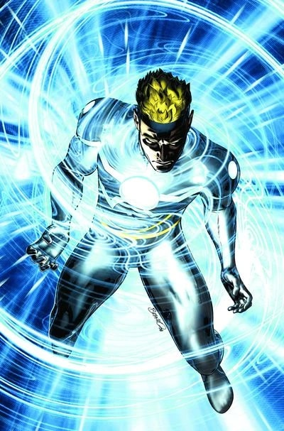
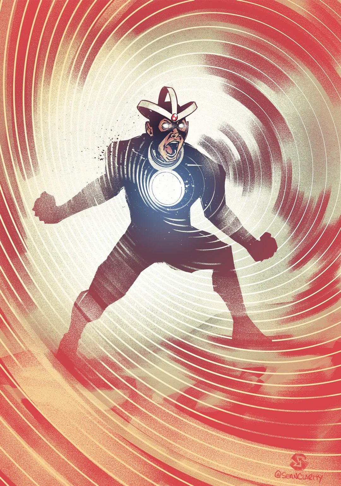
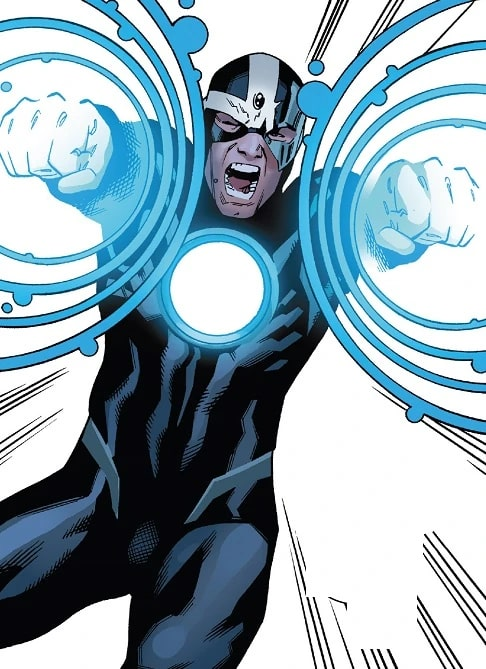
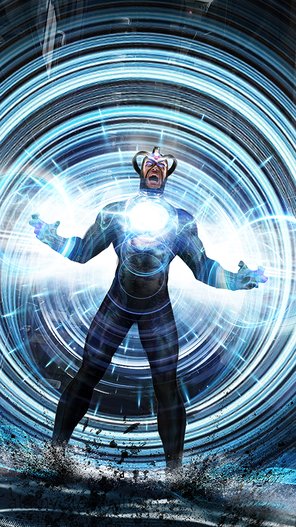
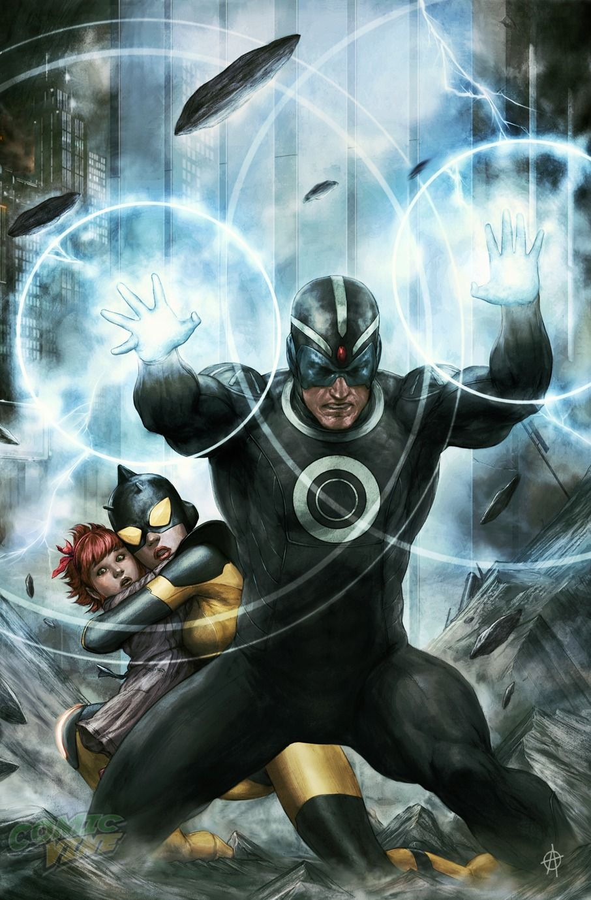
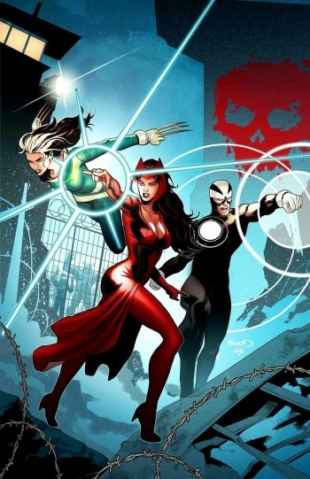
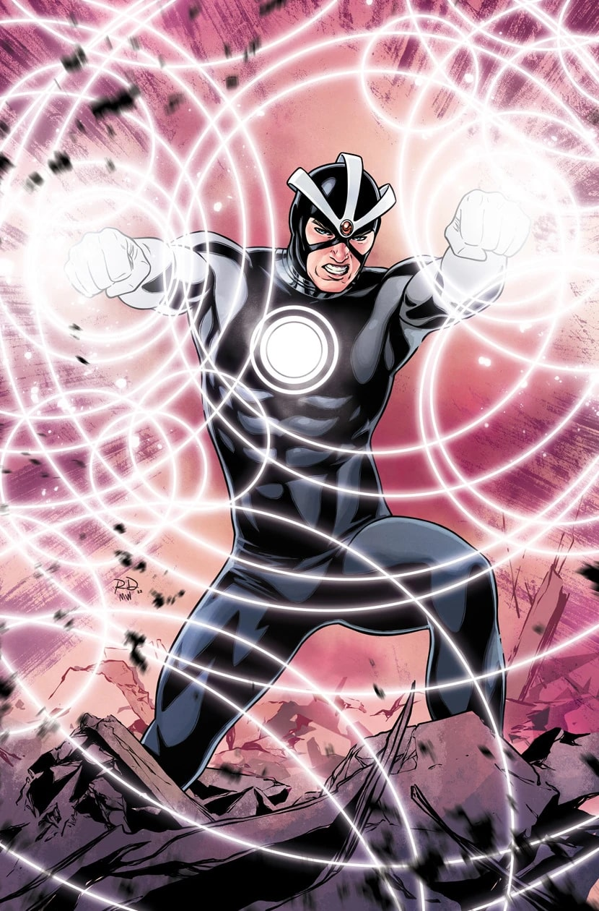
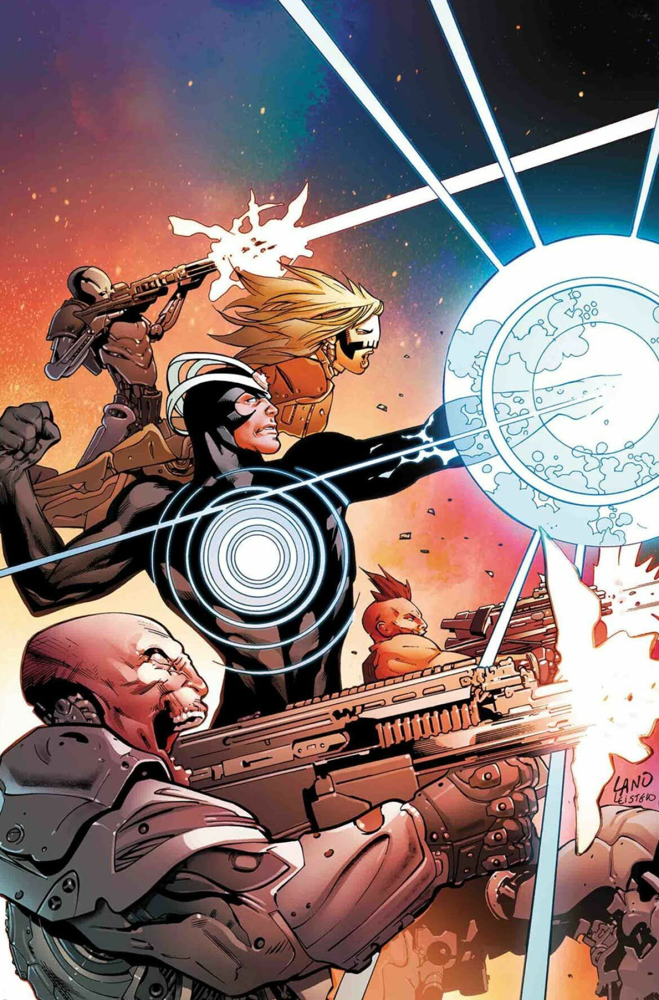
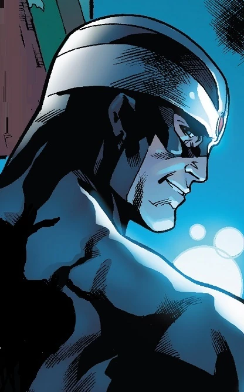
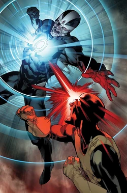

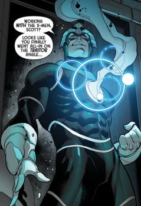
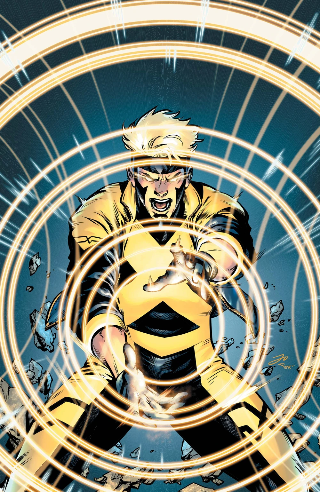
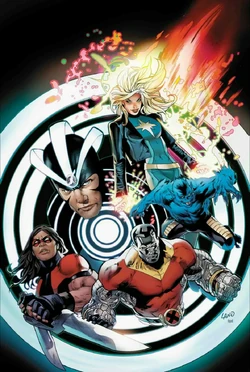
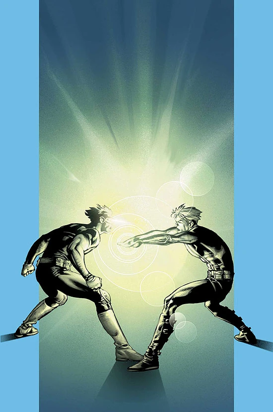
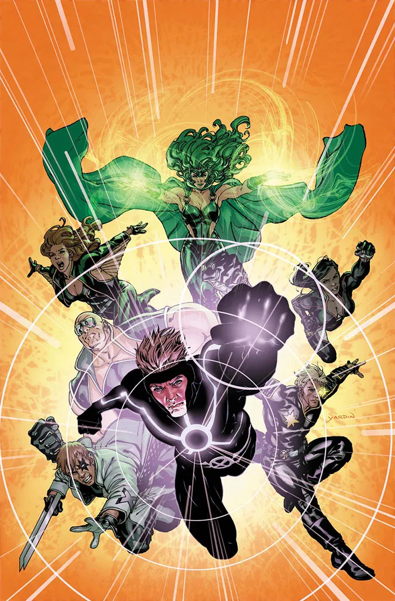
Personnalité :
Alex Summers a un vrai sens du devoir, mais n'a jamais cherché à être un leader comme son frère.
On l'a pourtant souvent placé dans des positions de commandement, ce qui lui a créé une pression personnelle importante et un sentiment d'imposture.
Il doute beaucoup de lui-même, même s'il ne le montre pas.
Il n'aime pas suivre une hiérarchie rigide, et peut être rebelle, voire têtu vis-à-vis des décisions de Xavier ou de Cyclope.
Il est émotif et impulsif, se mettant facilement en colère et le poussant à prendre des décisions rapides, parfois risquées.
C'est l'un des X-Men les plus loyaux.
Il ne manipule pas, et veut toujours faire ce qui lui semble moralement juste.
Capacités :
Havok est un mutant capable d'absorber l'énergie cosmique environnante (comme l'énergie stellaire, les rayons X ou les radiations gamma) dans les cellules de son corps, transformant cette énergie d'une façon inconnue pour la renvoyer sous forme de décharges de plasma.
Ces rafales peuvent jaillir de toutes les parties de son corps, mais il les concentre généralement au niveau de ses bras.
Ses rafales sont assez puissantes pour faire sauter une porte d'acier renforcé.
Sa rafale n'est pas une force de concussion (choc) comme ça a déjà pu être dit dans certaines histoires, mais une émission de chaleur.
En utilisant ses rafales sur un objet, la montée en chaleur soudaine fait que l'objet explose où se désintègre, mais s'il concentre son énergie au niveau le plus bas, il peut projeter un objet où une personne dans les airs sans lui faire de dégâts.
Il peut également utiliser ses rafales au niveau du sol pour se propulser dans les airs et voler.
Il est immunisé contre la plupart des radiations et formes de chaleur, comme ses propres rafales, mais aussi contre les rafales optiques de son frère Cyclope.
En revanche, il ne l'est pas totalement contre les pouvoirs de son autre frère Vulcain.

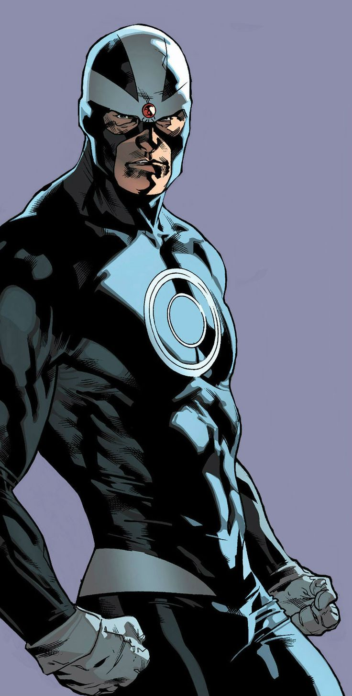
Costume :
Le costume le plus iconique d'Havok est composé d'une combinaison noire intégrale, avec un grand disque blanc sur la poitrine et des cercles concentriques autour.
Il porte un casque noir ne laissant apparaître que ses yeux et sa bouche.
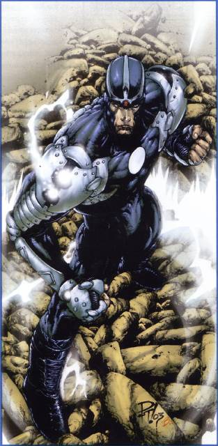
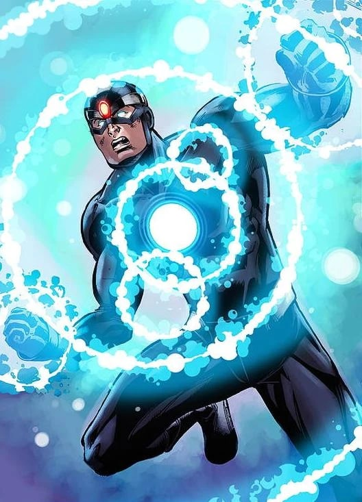
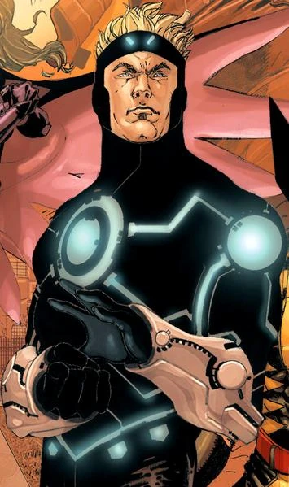
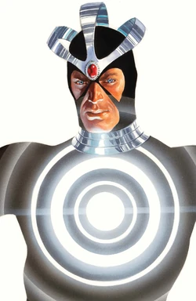
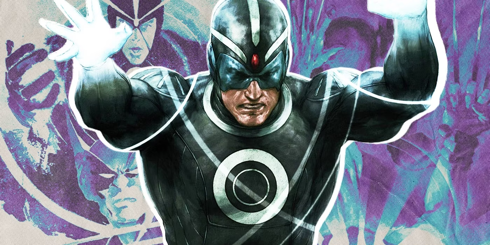
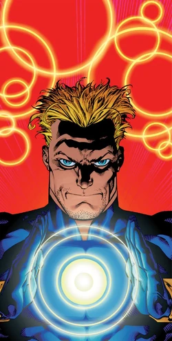
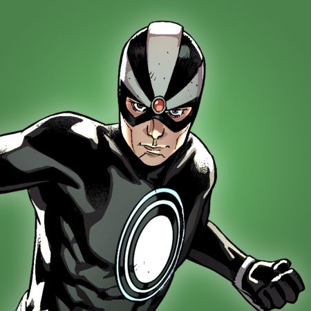
Les principaux ennemis de Havok
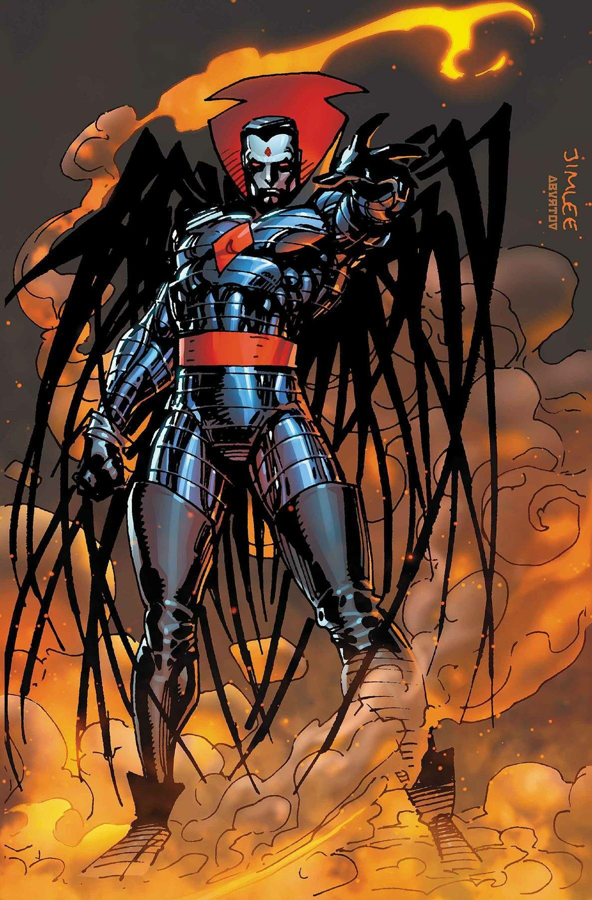


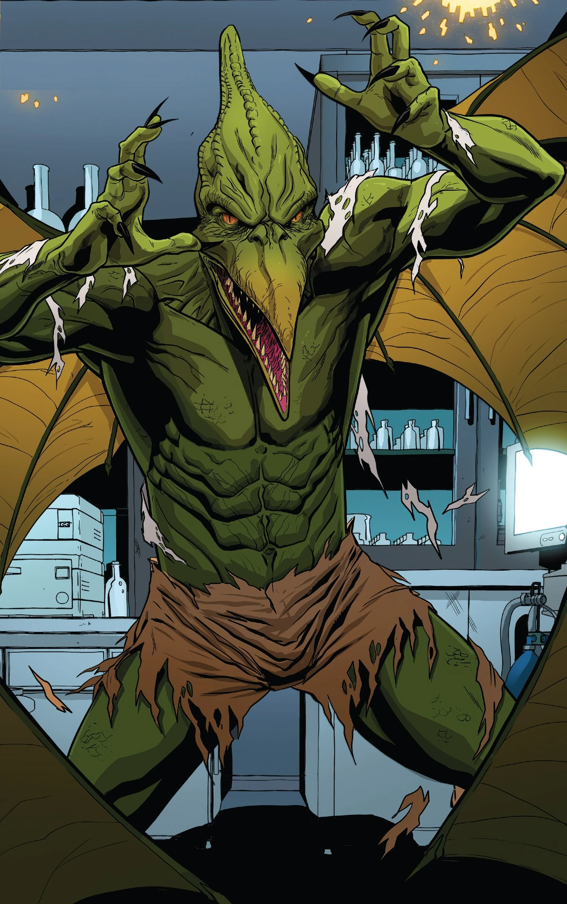

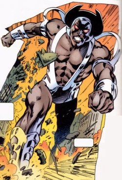

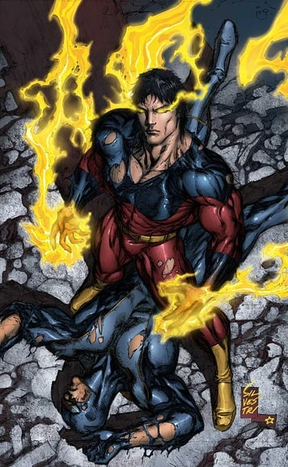
Équipes affiliées